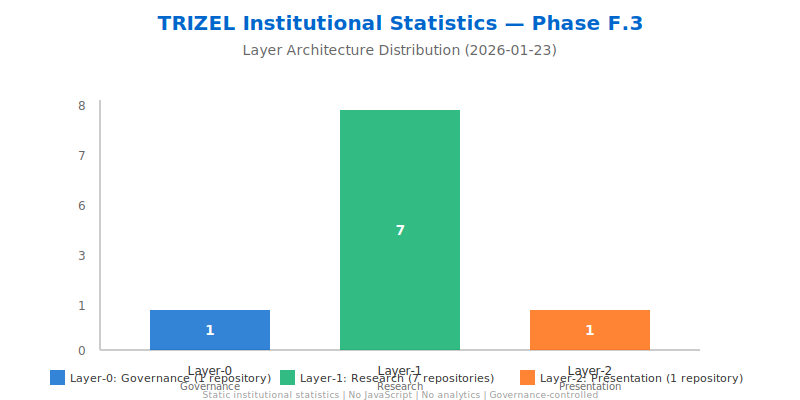

⚠️ Governance Notice
Static Archive — Governed / No JS / No Analytics
This archive contains frozen institutional artifacts from January 23, 2026. All files are static data with no JavaScript, no analytics, and no runtime behavior. Published under Layer-0 governance authorization.
Artifact Files
-
Data statistics.csvTabular institutional metrics in CSV format. Contains layer distribution, repository counts, and supported features.
-
Data statistics.jsonStructured institutional statistics in JSON format. Includes governance, research, and presentation layer metrics with full provenance.
-
Visualization chart.svgVisual representation of TRIZEL layer architecture distribution. Static SVG chart showing repository distribution across three layers.
-
Publication metadata and layer separation documentation. Contains source/destination mapping and compliance verification.
-
Archive documentation describing artifact set, layer separation, institutional statistics, and governance compliance.
{kind=link}
Institutional Statistics Visualization
Archive Information
- Publication Date: 2026-01-23
- Scope: Institutional Statistics Archive
- Total Files: 5 artifacts + 1 index
- Status: FROZEN — Immutable
- Governance: ✅ Layer-0 Authorized
Compliance
- ✅ Static Content Only — Pure data files, no dynamic behavior
- ✅ No JavaScript — Zero client-side execution
- ✅ No Analytics — No tracking, metrics, or telemetry
- ✅ No External Assets — All content self-contained
- ✅ Governance-Controlled — Layer-0 authorization required